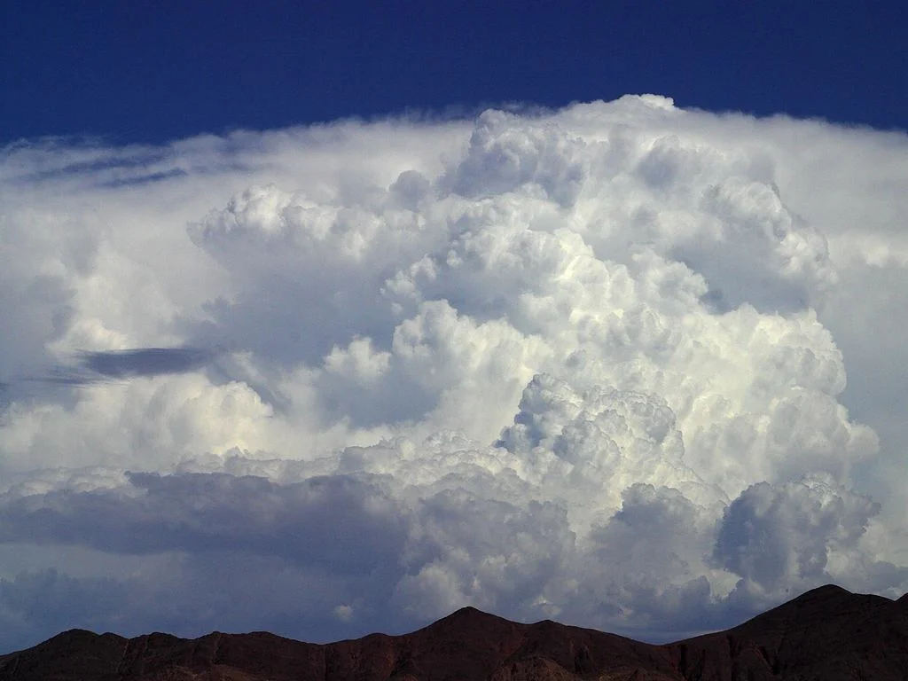

Third edition
Introduction to
Modern Climate Change
The science, economics, and policy of a changing planet—made clear.
A textbook for the climate conversation
Understand the problem.
Engage with the solutions.
This textbook is tightly focused on anthropogenic climate change. It combines an introduction to the science with the economic and policy questions that shape the public debate.
With quantitative depth that requires no more than simple algebra, the book prepares science and non-science students alike to reason clearly about one of the defining issues of our time.
Award-winning climate education
Louis J. Battan Author’s Award
American Meteorological Society
Teach. Learn. Explore.
Resources for every chapter
What reviewers say
“Well balanced, well written, highly illuminating, and accessible to non-science majors.”
“It uses stories, analogues, and examples to draw the reader into the story of the science of our changing planet.”
“The writing is very accessible without being too simplistic.”